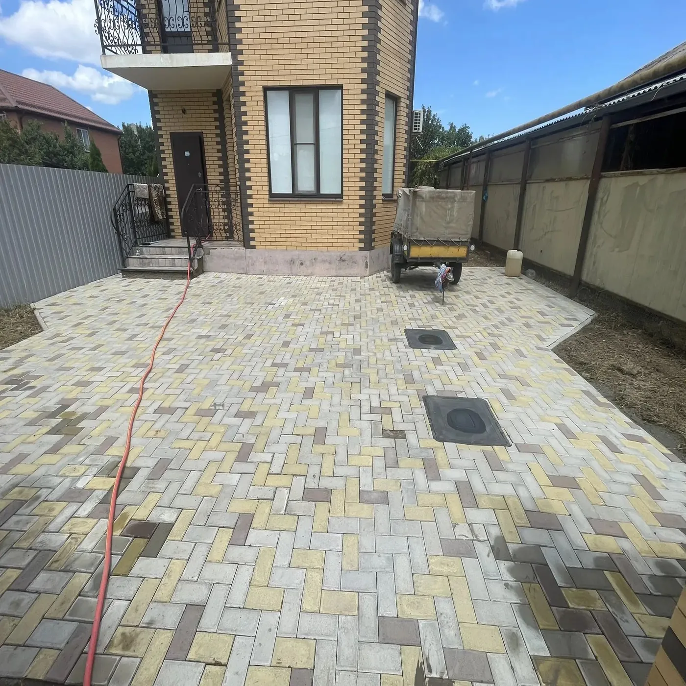
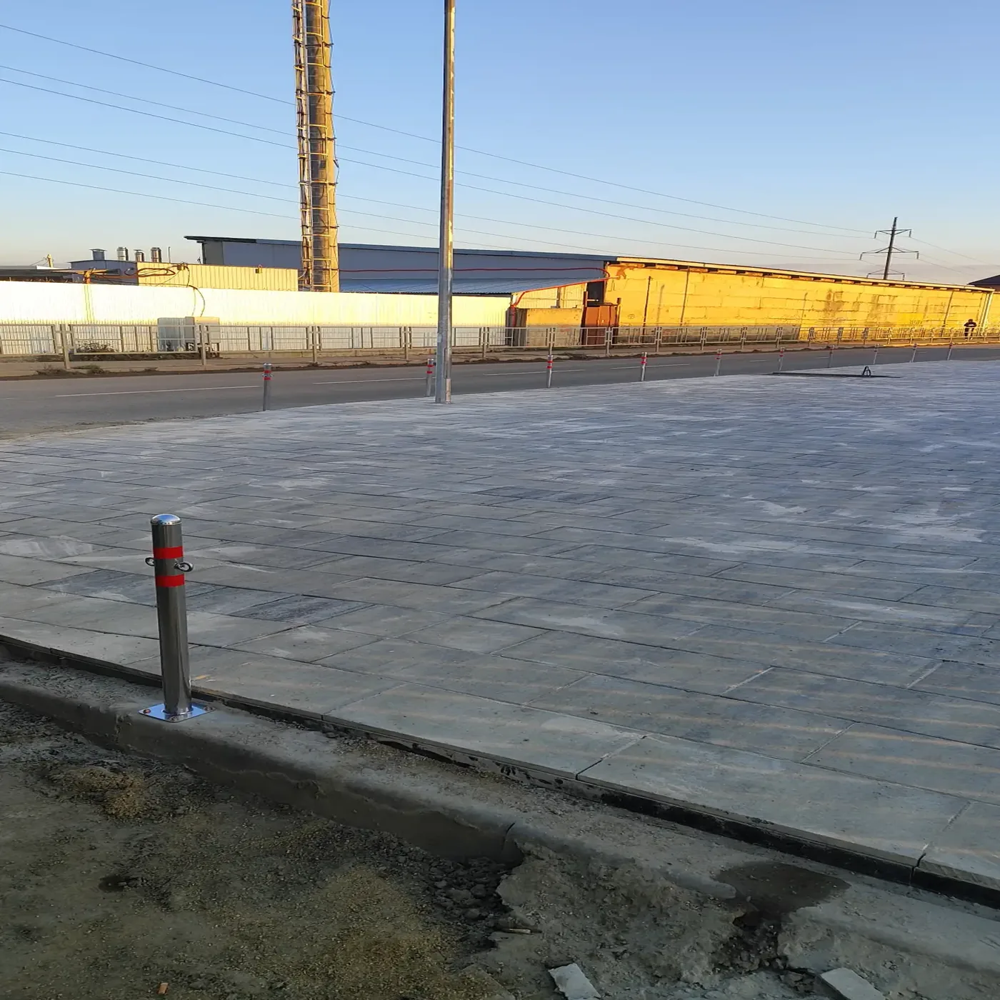
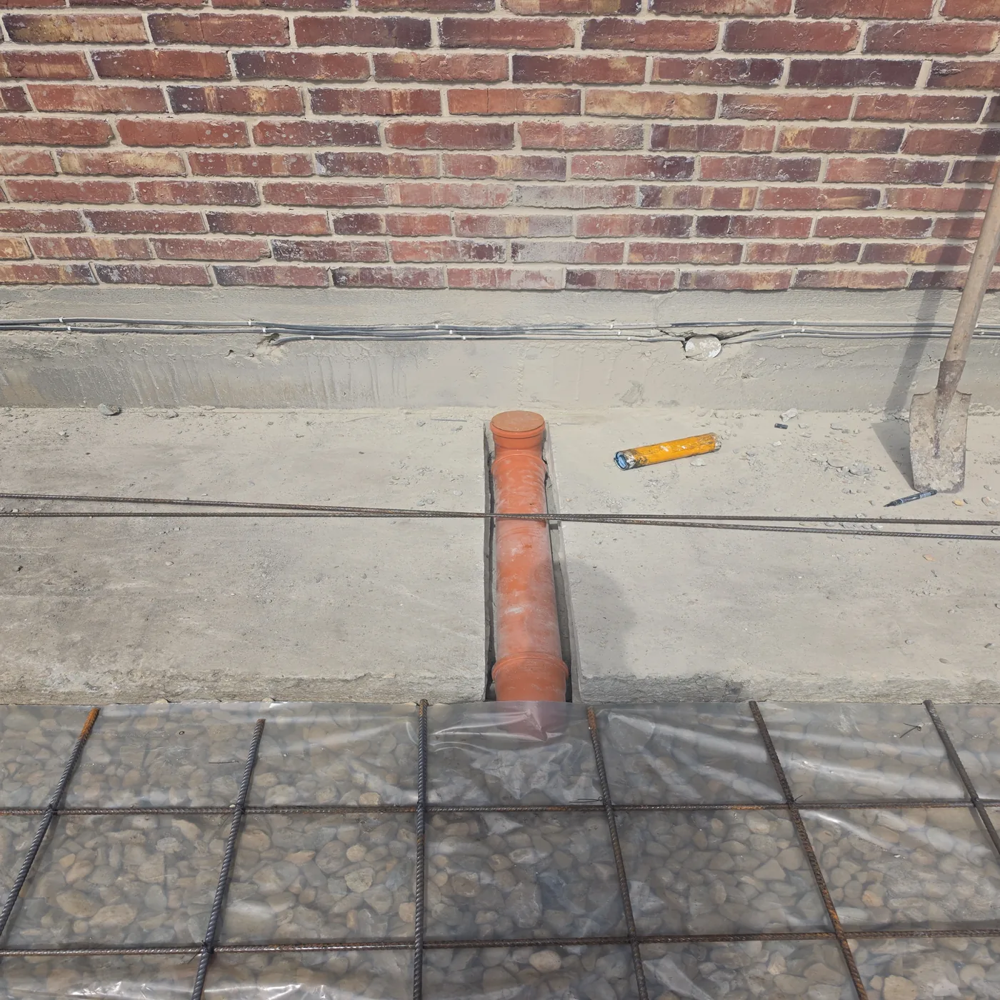
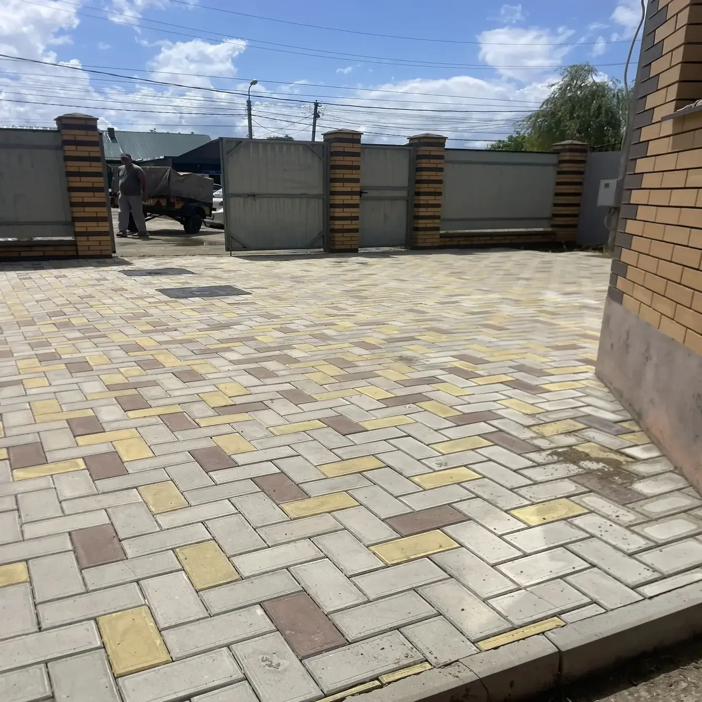

Мощение и благоустройство с 2017 года
Территория,
сделанная надолго.
Укладываем тротуарную плитку, обустраиваем парковки и бетонные площадки. От подготовки основания до готового покрытия — одной командой.
Реальные объекты. Свои бригады.Гарантия 36 месяцев по договору.
ТРOТУАР_ПРО / 2026
За результат отвечаем
своим именем.
своим именем.
2017год начала работы
140+выполненных объектов
36месяцев гарантии
Что мы делаем
От дорожки у дома
до территории бизнеса
Берём на себя весь цикл работ: оцениваем участок, готовим основание и укладываем покрытие под нужную нагрузку.





Не уверены, какое решение подойдёт вашему участку?
Обсудить задачу Основа долговечности
Красивое покрытие начинается под землёй.
Плитку видно сразу. Основание — только через несколько сезонов. Поэтому мы уделяем подготовке участка столько же внимания, сколько финишной укладке.
01Учитываем грунт и рельеф
02Послойно уплотняем основание
03Предусматриваем отвод воды

Точность в каждом слое
Понятный процесс
От первого разговора
до готового объекта
Вы знаете, что происходит на каждом этапе, кто отвечает за работы и каким будет итог.
Заявка
Расскажите о задаче и покажите участок.
Осмотр
Оценим площадь, грунт, перепады и нагрузку.
Расчёт
Согласуем решение, материалы и стоимость.
Подготовка
Подготовим участок и устроим основание.
Работы
Выполним мощение или бетонирование.
Сдача
Проверим результат и передадим объект.
Следующий шаг
Обсудим вашу
территорию?
Оставьте описание задачи — подготовим основу для разговора о решении и стоимости.